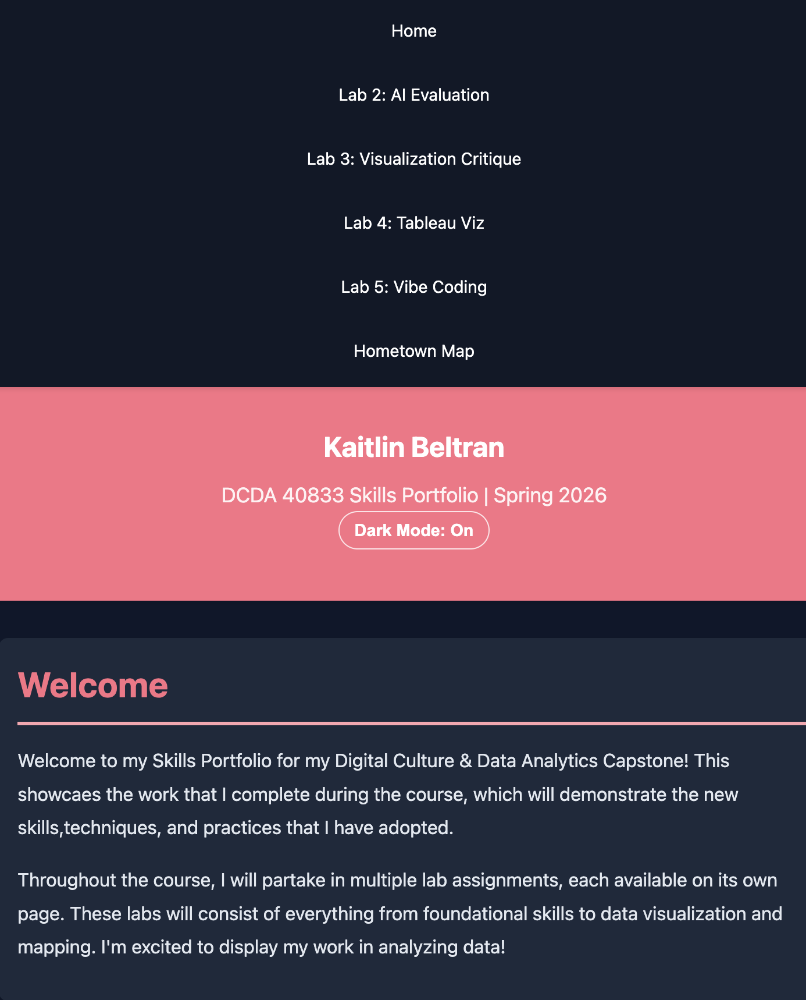

Lab Requirements
This lab explored AI-assisted coding, sometimes referred to as “vibe coding,” where developers describe desired functionality in natural language and AI generates working code. The goal was to experiment with AI as a coding collaborator while maintaining the ability to read, explain, and modify any generated code.
The assignment required completing at least two AI-assisted coding experiments. These could include enhancing an existing website, generating Python code for data tasks, or debugging broken code with AI assistance. Throughout the process, students were required to review AI-generated code line by line and document their level of understanding using the “Understanding Spectrum.”
Finally, the lab required integrating the work into the Skills Portfolio by explaining the feature created with AI assistance, providing commented code examples, documenting the AI prompts and outputs used during development, and reflecting on responsible and effective ways to use AI in programming workflows.
Description: What I Built with AI Assistance
I used AI assistance to add a dark mode toggle to my existing Skills Portfolio. The feature allows users to switch between light and dark themes and saves the user’s preference so it stays consistent after refreshing or returning to the site. My goal was to enhance usability while maintaining the overall visual style of my portfolio.
Process: How I Used AI (Experiments A + C)
I used AI as a collaborative coding assistant to implement and refine the dark mode feature. AI helped generate the initial toggle logic (Experiment A), and during integration it also helped identify and correct a selector alignment issue between my button and the JavaScript (Experiment C). I reviewed each suggested change, integrated it into my existing files, and tested the feature across pages to ensure it worked consistently.
-
Dark mode is activated by adding
data-theme="dark"to the<html>element. -
When the button is clicked, JavaScript checks the current theme and either adds
or removes the
data-themeattribute. -
The button text updates (On/Off) and
aria-pressedupdates for accessibility. -
The chosen theme is stored in
localStorageso it persists across refreshes.
Key Code Snippet + Understanding Spectrum Comments
Below is a key snippet of the JavaScript with my honest understanding-spectrum comments.
// I understand the logic: this selects the dark mode toggle button so we can respond to clicks
const darkModeToggle = document.getElementById('dark-mode-toggle');
// I understand the logic: this retrieves the user's saved theme preference from localStorage
const savedTheme = localStorage.getItem('theme');
// I understand the logic: if the user previously chose dark mode, apply it on page load
if (savedTheme === 'dark') {
document.documentElement.setAttribute('data-theme', 'dark');
darkModeToggle.textContent = 'Dark Mode: On';
darkModeToggle.setAttribute('aria-pressed', 'true');
}
In my full code, I added understanding-spectrum comments throughout the script to document what I fully understood versus what I verified through testing.
AI Prompts + AI Output (before my edits)
The following files document the exact prompts I used and the AI’s original output before I modified anything. This provides transparency into my AI-assisted workflow.
Debugging with AI (Experiment C)
During implementation, I used AI to verify that my dark mode toggle was
correctly connected to the page. The AI identified a potential selector
mismatch issue and helped ensure that the button id matched what JavaScript
was selecting with getElementById. Through this process, I learned
that even small inconsistencies in element IDs can cause interactive features
to fail because the selected element becomes null and the click
handler cannot attach.
My Vibe Coding Guidelines
Through this lab, I developed a few personal guidelines for using AI in coding responsibly. First, I should only use AI-generated code that I can read, explain, and modify. Second, AI is most helpful when I already understand the goal of the feature and use it to help with implementation, debugging, or syntax support rather than treating it as a black box. Finally, I should always test AI-generated code carefully as it is capable of mistakes, and the most important factor is that I understand the code myself.
Screenshot/Demo
Dark mode screenshot below:

What This Lab Demonstrates About My Abilities
This lab demonstrates my ability to use AI as a collaborative tool while maintaining control and understanding of the code being used. By reviewing AI-generated code line by line and documenting my level of understanding, I was able to evaluate the code critically rather than simply copying it into my project.
The assignment also reflects my ability to integrate new features into an existing website while maintaining consistent styling and functionality. Using AI assistance allowed me to prototype ideas quickly, but the process still required testing, debugging, and thoughtful implementation.
Key Takeaways
One key takeaway from this lab is that AI can be a powerful tool for accelerating development, but it does not replace the need for human understanding and oversight. AI-generated code can introduce errors, unnecessary complexity, or functionality that the developer does not fully understand. Maintaining the ability to read, explain, and modify code is essential when working with AI-assisted development tools.